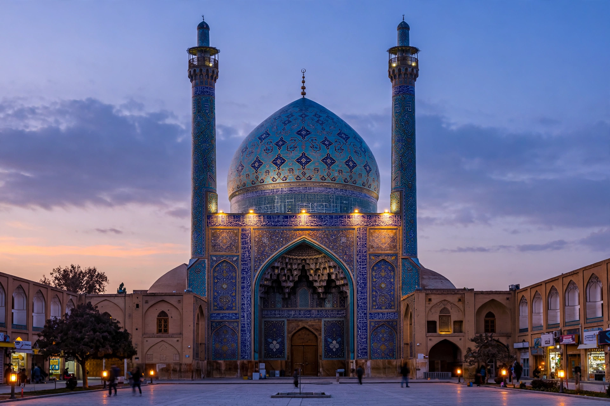

| Safavid dynasty | |
|---|---|
| Ruled | 1501 – 1736 |
| Capitals | Tabriz, Qazvin, Isfahan |
| Founder | Ismail I |
| Greatest ruler | Abbas I (r. 1588–1629) |
| State religion | Twelver Shia Islam |
| Languages | Persian, Azerbaijani |
| Fall | Afghan siege of Isfahan, 1722; final deposition 1736 |

The Safavid dynasty (Persian: دودمان صفوی) was one of the most significant ruling dynasties of Iran, reigning from 1501 to 1736. Originating in the Safavid Sufi order of Ardabil, the dynasty founded an empire that restored Persia as a unified political entity between the Ottoman and Mughal worlds, and — most consequentially — established Twelver Shia Islam as the state religion, giving Iran the predominantly Shia religious identity it retains today. At its height under Abbas I, Safavid Persia was a major gunpowder empire, a centre of trade on the silk routes, and a golden age of Persian art, architecture, and carpet weaving.
The dynasty takes its name from Shaykh Safi al-Din (1252–1334), founder of the Safaviyya Sufi order in Ardabil in northwestern Iran. Over the fifteenth century the order became militant, gathering Turkmen tribal followers known as the Qizilbash ("red heads") for their distinctive twelve-gored crimson caps, signifying devotion to the Twelve Imams. Under Shaykh Junayd and Shaykh Haydar the order sought temporal power; both died in battle. Haydar's son Ismail, proclaimed shah at Tabriz in 1501 at about fourteen years of age, founded the empire.
Ismail I conquered Persia, Iraq, and much of the Caucasus within a decade, and proclaimed Twelver Shi'ism the state religion — a radical act in majority-Sunni lands, enforced by persecution and by importing Shia scholars from Lebanon, Bahrain, and southern Iraq. The Safavid claim to legitimacy rested on descent claimed from the Seventh Imam, Musa al-Kazim, and on the shah's status as representative of the Hidden Imam. Expansion westward brought inevitable collision with the Sunni Ottoman Empire; at the Battle of Chaldiran (1514) Ottoman artillery and muskets shattered the Qizilbash, a defeat that checked Safavid expansion and pushed the dynasty to adopt firearms.
After Ismail's death in 1524, Tahmasp I endured a long reign of Qizilbash factionalism and Ottoman and Uzbek invasions, moving the capital from Tabriz to Qazvin. The empire reached its zenith under Abbas I (r. 1588–1629), who reformed the military with the help of the English Sherley brothers, creating standing musketeer and artillery corps and a loyal ghulam infantry of Georgian and Armenian converts to curb the Qizilbash; recovered territory from the Ottomans, Uzbeks, and Portuguese (who were expelled from Hormuz in 1622); and in 1598 moved the capital to Isfahan, rebuilding it around the Naqsh-e Jahan square with the Shah Mosque, the Sheikh Lotfollah Mosque, and the Ali Qapu palace — "Isfahan is half the world," the saying went. Abbas also deported the Armenians of Julfa to a suburb of Isfahan and made them the hub of a silk-trade network reaching Europe.
After Abbas, weaker shahs, harem politics, economic strain, and religious intolerance toward minorities eroded the state. In 1709 the Ghilzai Afghans under Mirwais Hotak rebelled at Kandahar; in 1722 his son Mahmud besieged Isfahan, starving the city into surrender and deposing Shah Soltan Hoseyn. Safavid pretenders lingered while the military leader Nader Shah expelled the Afghans; in 1736 Nader took the throne himself, formally ending the dynasty, though a nominal Safavid puppet was briefly restored in 1749–1750.
The Safavids left Iran its enduring Shia identity, its approximate territorial extent, and some of its most celebrated art: miniature painting under court patrons such as Shah Tahmasp, whose illustrated Shahnameh is a masterpiece of the Persian book; blue-tile architecture; and the classic Persian carpet. The Safavid–Ottoman frontier hardened the Sunni–Shia divide across the Middle East, shaping the region's geopolitics into the present.